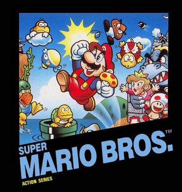

Premise
For my ICS3U summative project, I have created a modified version of the hit game, Super Mario Bros. I felt as if taking on the creation of this game would allow me to push my boundaries to see how much I could really do using the concepts learned throughout this grade 11 course. This game includes the elements of global variables, functions with and without parameters, string functions, arrays, and bubble sorting. Feel free to navigate throughout the different pages to learn more about the creation of the game, how the game is played, and last but not least, actually play the game!
|

|
|
|
Work Distribution
I will be taking on this mission solo. My responsibilities include:
• Creating all the required webpages using HTML and CSS (Homepage, Rough Sketches, Code Snippets, New Functions, Help)
• Program the Super Mario Bros game. This includes adding assets, creating interative componenets with the user, including all the required components, and testing for errors
• Ensuring that all work is done by the deadlines
|
Possible Challenges
To include STRING FUNCTIONS:
I can display the player's name in the top right of the game with the first letter in their name being capitalized above the score using string functions.
To include ARRAYS:
I can display the player's score for each level to the right of the game by using parallel arrays; one array for the level and the other for the scores.
To include SORTING:
With the scores they have for each level, I can rank it in order from highest to lowest with the use of the bubble sorting algorithm.
|
Screens
I am planning to have 3 different main screens:
• Menu Screen - This is the screen where the title screen in on. By a click of a button, the user will enter the game.
• Game Screen - These are the screens where the actual game is going to be played on. I am planning to include 5 different levels, increasing in difficulty through each level. Each level is going to have it's own scene in Phaser, but as they are all the same concept, I am going to refer to them as just the game screen
• Level Select Screen - This is the screen where the user will be able to click on the level they would like to play as long as they have it unlocked. It will be accessible from the home page
• Transition Screen - This screen will appear when a level is complete or if the player runs out of lives. This is here to make the transition between levels smooth.
|
Concerns
• The due date is only about a week away and my game is ambitious so I am nervous that I won't be able to finish the game in time
• The creation of the game will have components that I don't know how to add. This will require a lot of research and time. I am a beginner to using Phaser so I will have to learn as I create the game
• I don't know how I am going to include all 4 required functions (Function Without Parameters, Function With Parameters, Function Without Parameters and a Return Value, and Function With Parameters and a Return value)
|